Stem borer (Coleoptera: Erotylidae) in Eutrochium
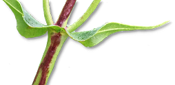
| Record no.: | 0228 |
|---|---|
| Feeding guild: | Stem borer |
| Taxonomy: | Coleoptera: Erotylidae: cf. Acropteroxys gracilis |
| Stages observed: | trace, larva, pupa, adult |
| Distribution observed: | IA |
| Hosts in Eutrochium: | E. purpureum (sweet scented joe pye weed); E. maculatum (spotted joe pye weed) |
I found overwintering lizard beetle larvae and a pupa in stems of E. maculatum and E. purpureum, rearing adults from the former host in early July 2017 and early June 2023. The coloration of the adults suggested A. gracilis as the identification.

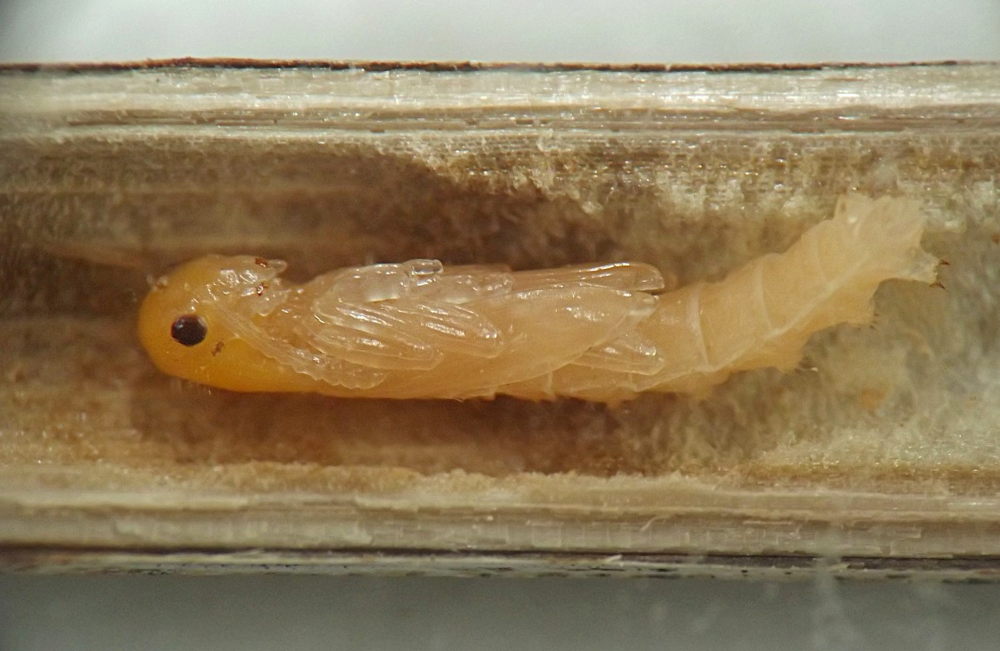

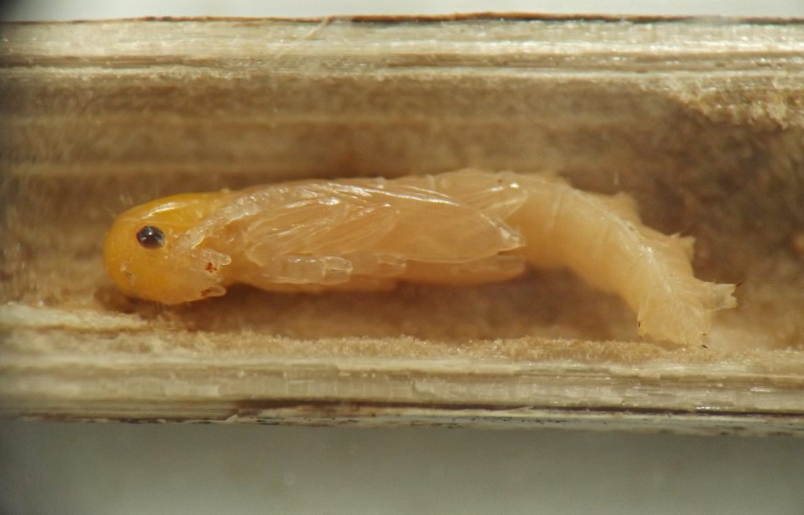

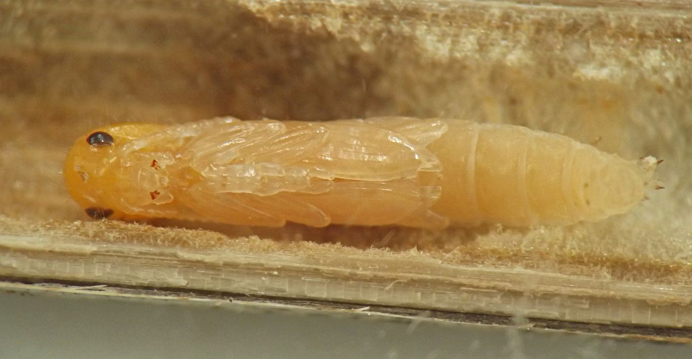

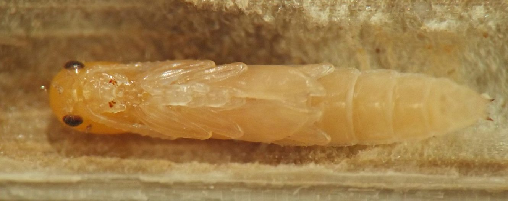

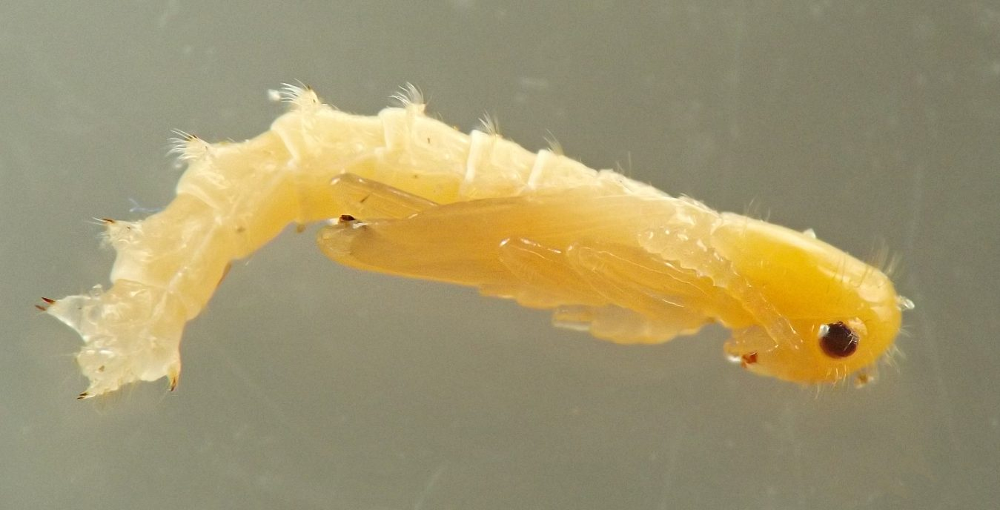

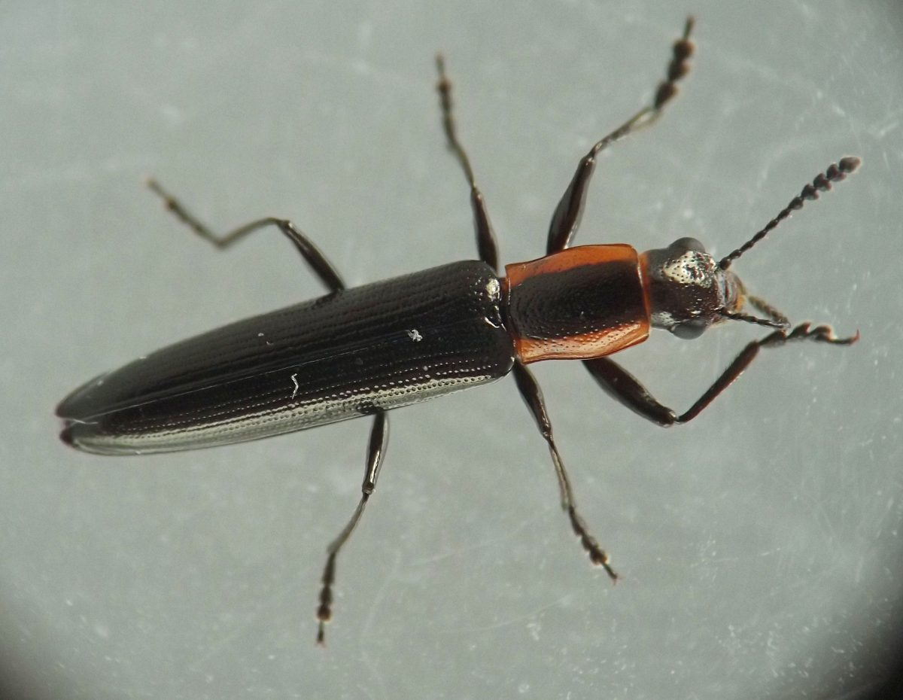

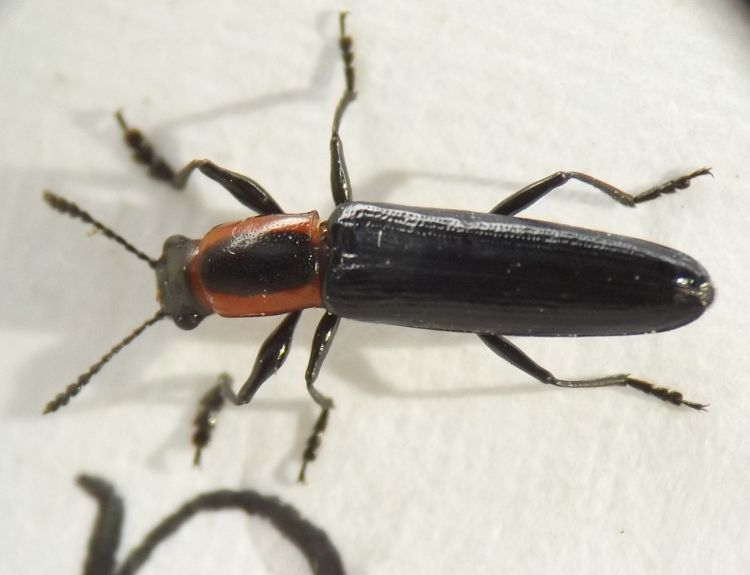

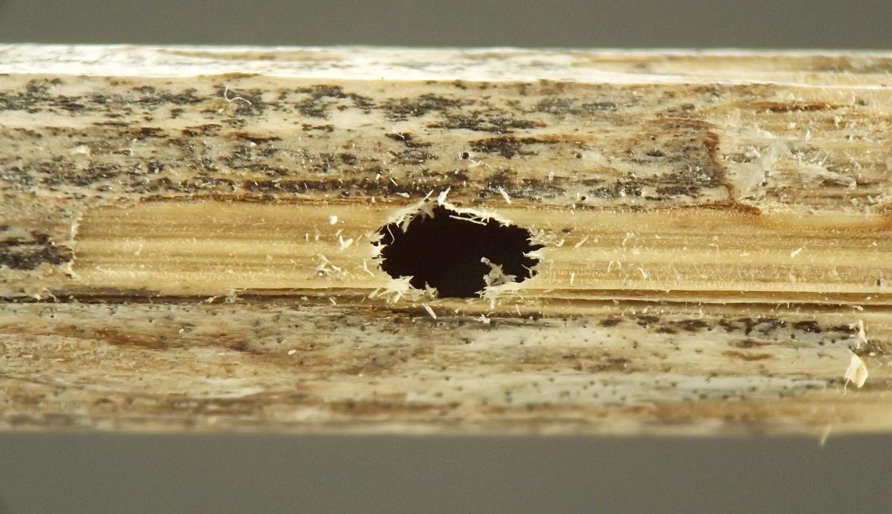

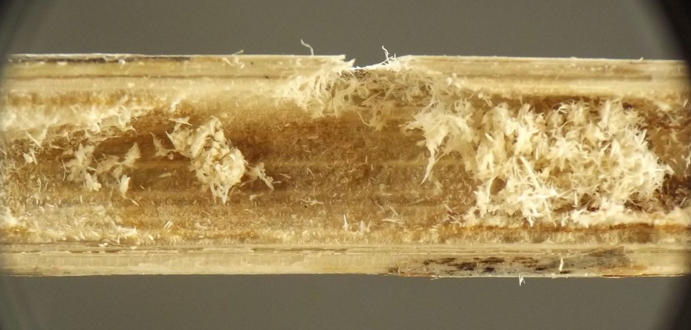

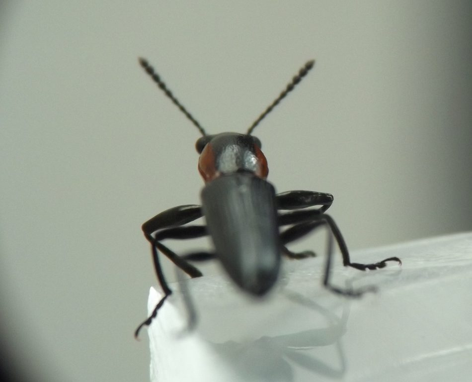
Page created: November 25, 2026. Last update: none